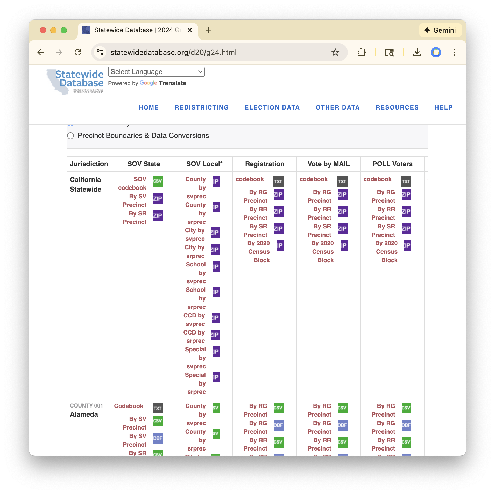
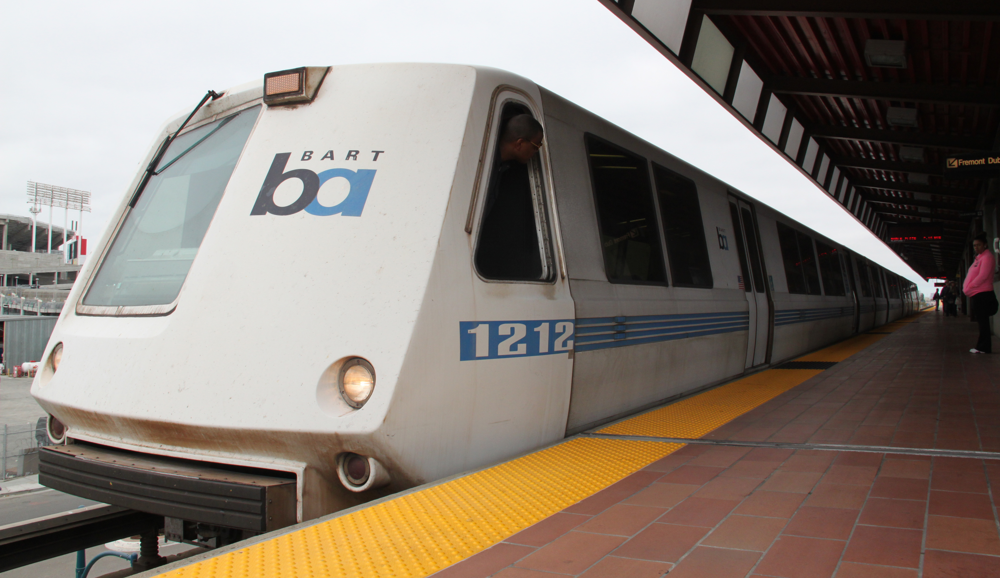
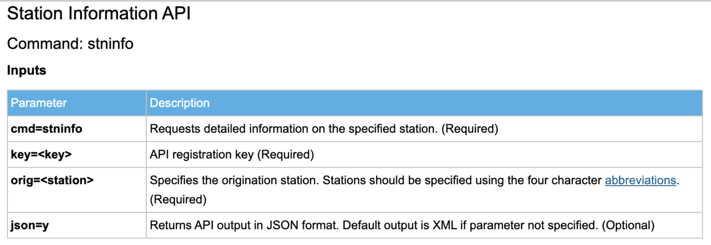
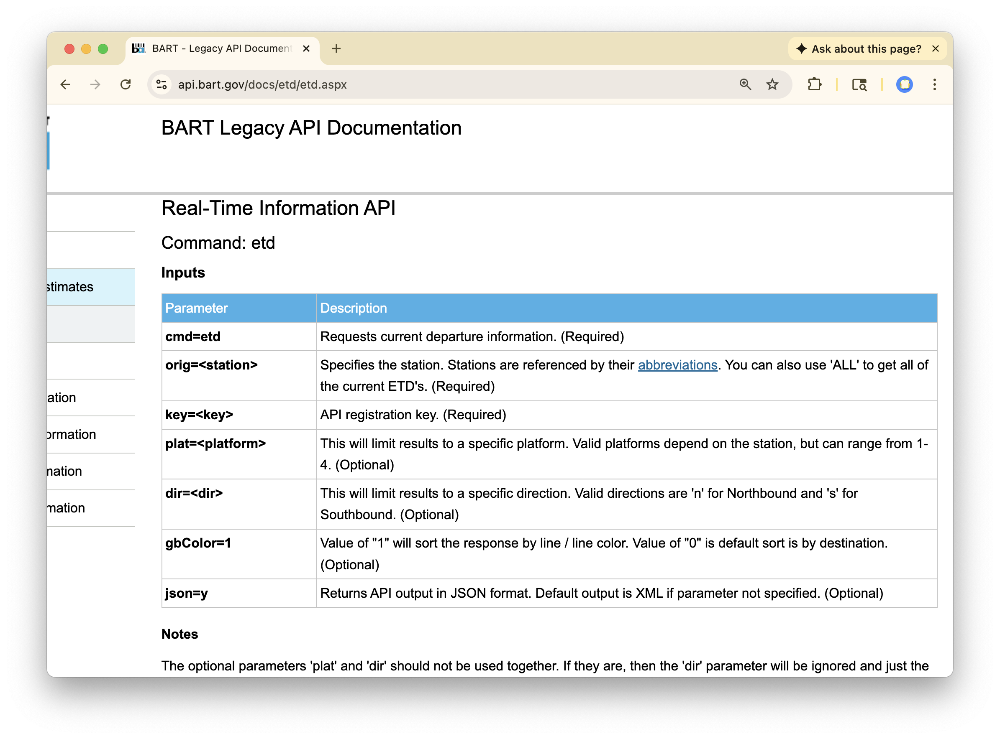

APIs
Application Programming Interfaces
Question: What are the file extensions should go in the blanks above (at the end of the file names) to write the contents the objects x, y, and z to disk in the most appropriate formats?
JSON
JavaScript Object Notation (JSON): a lightweight, text-based format for representing structured data. Roughly anaologous to R lists.
Components:
- Objects: key-value pairs enclosed in curly braces
{}. - Values: can be strings, numbers, booleans, null, objects, or arrays.
- Arrays: ordered lists of values enclosed in square brackets
[].
JSON Example 1
JSON Example 2
Agenda
- Preamble: JSON files
- What are APIs?
- Web interface
- Command line interface
- R interface
- Example: Bay Area Rapid Transit (BART)
What are APIs?
Consider the Statewide Database

- Collect election data from each county each election cycle.
- Synthesize and clean hetereogeneous data into single file.
- Upload these files to website.
- Users download files to local machines for analysis.
How can this be improved?
APIs
Application Programming Interfaces (APIs): a structured format for computers to exchange data over the internet.
- Client-server model: client (user) makes request to server for data. Server responds with requested data.
- Data typically returned in as JSON (or XML).
- Most require client to have API key to make request.
- Common requests:
GET: retrieve data from serverPOST: send data to server
Example: BART
BART

Question: Brainstorm 5 different data sets that BART might maintain. Identify whether each one is well-represented a 1D array (i.e. text string), a 2D array (i.e. data frame), or a multi-dimensional array (i.e. nested list).
02:30
Interacting with an API
- Web browser: enter URL with parameters to make request.
- Command line: use
curlto make request. - R or Python: use HTTP libraries to make request.
Interacting with a Browser
Craft URL from a base URL (endpoint) and parameters.

https://api.bart.gov/api/stn.aspx?cmd=stninfo&
orig=DBRK&json=y&key=MW9S-E7SL-26DU-VV8V"
Interacting from Command Line
Most shells have curl command for making HTTP requests.
Interacting from R

Interacting from R
Interacting from R
<httr2_response>
GET https://api.bart.gov/api/stn.aspx?cmd=stninfo&orig=DBRK&key=MW9S-E7SL-26DU-VV8V&json=y
Status: 200 OK
Content-Type: application/json
Body: In memory (1810 bytes)Interacting from R
$`?xml`
$`?xml`$`@version`
[1] "1.0"
$`?xml`$`@encoding`
[1] "utf-8"
$root
$root$`@id`
[1] "1"
$root$uri
$root$uri$`#cdata-section`
[1] "http://api.bart.gov/api/stn.aspx?cmd=stninfo&orig=DBRK&json=y"
$root$stations
$root$stations$station
$root$stations$station$name
[1] "Downtown Berkeley"
$root$stations$station$abbr
[1] "DBRK"
$root$stations$station$gtfs_latitude
[1] "37.870104"
$root$stations$station$gtfs_longitude
[1] "-122.268133"
$root$stations$station$address
[1] "2160 Shattuck Avenue"
$root$stations$station$city
[1] "Berkeley"
$root$stations$station$county
[1] "alameda"
$root$stations$station$state
[1] "CA"
$root$stations$station$zipcode
[1] "94704"
$root$stations$station$north_routes
$root$stations$station$north_routes$route
$root$stations$station$north_routes$route[[1]]
[1] "ROUTE 3"
$root$stations$station$north_routes$route[[2]]
[1] "ROUTE 8"
$root$stations$station$south_routes
$root$stations$station$south_routes$route
$root$stations$station$south_routes$route[[1]]
[1] "ROUTE 4"
$root$stations$station$south_routes$route[[2]]
[1] "ROUTE 7"
$root$stations$station$north_platforms
$root$stations$station$north_platforms$platform
$root$stations$station$north_platforms$platform[[1]]
[1] "1"
$root$stations$station$south_platforms
$root$stations$station$south_platforms$platform
$root$stations$station$south_platforms$platform[[1]]
[1] "2"
$root$stations$station$platform_info
[1] ""
$root$stations$station$intro
$root$stations$station$intro$`#cdata-section`
[1] "The Downtown Berkeley BART Station is located on Shattuck Avenue between Allston Way and Addison Street. It is conveniently located close to the University of California campus and to many shops, restaurants, theaters and other attractions, and has valet bike parking. Public restrooms are available.Maps of this stationStation MapTransit StopsTransit RoutesSchedules and Fares"
$root$stations$station$cross_street
$root$stations$station$cross_street$`#cdata-section`
[1] "Between: Center St. & Allston Way"
$root$stations$station$food
$root$stations$station$food$`#cdata-section`
[1] "Nearby restaurant reviews from <a href=\"http://www.yelp.com/search?find_desc=Restaurant+&ns=1&rpp=10&find_loc=2160 Shattuck Avenue Berkeley, CA 94704\">yelp.com</a>"
$root$stations$station$shopping
$root$stations$station$shopping$`#cdata-section`
[1] "Local shopping from <a href=\"http://www.yelp.com/search?find_desc=Shopping+&ns=1&rpp=10&find_loc=2160 Shattuck Avenue Berkeley, CA 94704\">yelp.com</a>"
$root$stations$station$attraction
$root$stations$station$attraction$`#cdata-section`
[1] "More station area attractions from <a href=\"http://www.yelp.com/search?find_desc=+&ns=1&rpp=10&find_loc=2160 Shattuck Avenue Berkeley, CA 94704\">yelp.com</a> and <a href=\"http://www.sfgate.com/cgi-bin/article.cgi?f=/c/a/2008/03/13/NSENVEA1M.DTL&type=travel\">sfgate.com</a>"
$root$stations$station$link
$root$stations$station$link$`#cdata-section`
[1] "http://www.bart.gov/stations/DBRK"
$root$message
[1] ""Departures

Question: How would you modify this request to get estimated departure times (ETDs) for trains leaving from the Downtown Berkeley station (DBRK)?
Recall: Station Call
<httr2_response>
GET https://api.bart.gov/api/stn.aspx?cmd=stninfo&orig=DBRK&key=MW9S-E7SL-26DU-VV8V&json=y
Status: 200 OK
Content-Type: application/json
Body: In memory (1810 bytes)ETD Call
<httr2_response>
GET https://api.bart.gov/api/etd.aspx?cmd=etd&orig=DBRK&key=MW9S-E7SL-26DU-VV8V&json=y
Status: 200 OK
Content-Type: application/json
Body: In memory (1975 bytes)$`?xml`
$`?xml`$`@version`
[1] "1.0"
$`?xml`$`@encoding`
[1] "utf-8"
$root
$root$`@id`
[1] "1"
$root$uri
$root$uri$`#cdata-section`
[1] "http://api.bart.gov/api/etd.aspx?cmd=etd&orig=DBRK&json=y"
$root$date
[1] "09/04/2026"
$root$time
[1] "08:36:32 AM PDT"
$root$station
$root$station[[1]]
$root$station[[1]]$name
[1] "Downtown Berkeley"
$root$station[[1]]$abbr
[1] "DBRK"
$root$station[[1]]$etd
$root$station[[1]]$etd[[1]]
$root$station[[1]]$etd[[1]]$destination
[1] "Berryessa"
$root$station[[1]]$etd[[1]]$abbreviation
[1] "BERY"
$root$station[[1]]$etd[[1]]$limited
[1] "0"
$root$station[[1]]$etd[[1]]$estimate
$root$station[[1]]$etd[[1]]$estimate[[1]]
$root$station[[1]]$etd[[1]]$estimate[[1]]$minutes
[1] "2"
$root$station[[1]]$etd[[1]]$estimate[[1]]$platform
[1] "2"
$root$station[[1]]$etd[[1]]$estimate[[1]]$direction
[1] "South"
$root$station[[1]]$etd[[1]]$estimate[[1]]$length
[1] "5"
$root$station[[1]]$etd[[1]]$estimate[[1]]$color
[1] "ORANGE"
$root$station[[1]]$etd[[1]]$estimate[[1]]$hexcolor
[1] "#ff9933"
$root$station[[1]]$etd[[1]]$estimate[[1]]$bikeflag
[1] "1"
$root$station[[1]]$etd[[1]]$estimate[[1]]$delay
[1] "0"
$root$station[[1]]$etd[[1]]$estimate[[1]]$cancelflag
[1] "0"
$root$station[[1]]$etd[[1]]$estimate[[1]]$dynamicflag
[1] "0"
$root$station[[1]]$etd[[1]]$estimate[[2]]
$root$station[[1]]$etd[[1]]$estimate[[2]]$minutes
[1] "21"
$root$station[[1]]$etd[[1]]$estimate[[2]]$platform
[1] "2"
$root$station[[1]]$etd[[1]]$estimate[[2]]$direction
[1] "South"
$root$station[[1]]$etd[[1]]$estimate[[2]]$length
[1] "5"
$root$station[[1]]$etd[[1]]$estimate[[2]]$color
[1] "ORANGE"
$root$station[[1]]$etd[[1]]$estimate[[2]]$hexcolor
[1] "#ff9933"
$root$station[[1]]$etd[[1]]$estimate[[2]]$bikeflag
[1] "1"
$root$station[[1]]$etd[[1]]$estimate[[2]]$delay
[1] "0"
$root$station[[1]]$etd[[1]]$estimate[[2]]$cancelflag
[1] "0"
$root$station[[1]]$etd[[1]]$estimate[[2]]$dynamicflag
[1] "0"
$root$station[[1]]$etd[[1]]$estimate[[3]]
$root$station[[1]]$etd[[1]]$estimate[[3]]$minutes
[1] "41"
$root$station[[1]]$etd[[1]]$estimate[[3]]$platform
[1] "2"
$root$station[[1]]$etd[[1]]$estimate[[3]]$direction
[1] "South"
$root$station[[1]]$etd[[1]]$estimate[[3]]$length
[1] "5"
$root$station[[1]]$etd[[1]]$estimate[[3]]$color
[1] "ORANGE"
$root$station[[1]]$etd[[1]]$estimate[[3]]$hexcolor
[1] "#ff9933"
$root$station[[1]]$etd[[1]]$estimate[[3]]$bikeflag
[1] "1"
$root$station[[1]]$etd[[1]]$estimate[[3]]$delay
[1] "0"
$root$station[[1]]$etd[[1]]$estimate[[3]]$cancelflag
[1] "0"
$root$station[[1]]$etd[[1]]$estimate[[3]]$dynamicflag
[1] "0"
$root$station[[1]]$etd[[2]]
$root$station[[1]]$etd[[2]]$destination
[1] "Millbrae"
$root$station[[1]]$etd[[2]]$abbreviation
[1] "MLBR"
$root$station[[1]]$etd[[2]]$limited
[1] "0"
$root$station[[1]]$etd[[2]]$estimate
$root$station[[1]]$etd[[2]]$estimate[[1]]
$root$station[[1]]$etd[[2]]$estimate[[1]]$minutes
[1] "9"
$root$station[[1]]$etd[[2]]$estimate[[1]]$platform
[1] "2"
$root$station[[1]]$etd[[2]]$estimate[[1]]$direction
[1] "South"
$root$station[[1]]$etd[[2]]$estimate[[1]]$length
[1] "10"
$root$station[[1]]$etd[[2]]$estimate[[1]]$color
[1] "RED"
$root$station[[1]]$etd[[2]]$estimate[[1]]$hexcolor
[1] "#ff0000"
$root$station[[1]]$etd[[2]]$estimate[[1]]$bikeflag
[1] "1"
$root$station[[1]]$etd[[2]]$estimate[[1]]$delay
[1] "0"
$root$station[[1]]$etd[[2]]$estimate[[1]]$cancelflag
[1] "0"
$root$station[[1]]$etd[[2]]$estimate[[1]]$dynamicflag
[1] "0"
$root$station[[1]]$etd[[2]]$estimate[[2]]
$root$station[[1]]$etd[[2]]$estimate[[2]]$minutes
[1] "29"
$root$station[[1]]$etd[[2]]$estimate[[2]]$platform
[1] "2"
$root$station[[1]]$etd[[2]]$estimate[[2]]$direction
[1] "South"
$root$station[[1]]$etd[[2]]$estimate[[2]]$length
[1] "5"
$root$station[[1]]$etd[[2]]$estimate[[2]]$color
[1] "RED"
$root$station[[1]]$etd[[2]]$estimate[[2]]$hexcolor
[1] "#ff0000"
$root$station[[1]]$etd[[2]]$estimate[[2]]$bikeflag
[1] "1"
$root$station[[1]]$etd[[2]]$estimate[[2]]$delay
[1] "0"
$root$station[[1]]$etd[[2]]$estimate[[2]]$cancelflag
[1] "0"
$root$station[[1]]$etd[[2]]$estimate[[2]]$dynamicflag
[1] "0"
$root$station[[1]]$etd[[2]]$estimate[[3]]
$root$station[[1]]$etd[[2]]$estimate[[3]]$minutes
[1] "49"
$root$station[[1]]$etd[[2]]$estimate[[3]]$platform
[1] "2"
$root$station[[1]]$etd[[2]]$estimate[[3]]$direction
[1] "South"
$root$station[[1]]$etd[[2]]$estimate[[3]]$length
[1] "5"
$root$station[[1]]$etd[[2]]$estimate[[3]]$color
[1] "RED"
$root$station[[1]]$etd[[2]]$estimate[[3]]$hexcolor
[1] "#ff0000"
$root$station[[1]]$etd[[2]]$estimate[[3]]$bikeflag
[1] "1"
$root$station[[1]]$etd[[2]]$estimate[[3]]$delay
[1] "0"
$root$station[[1]]$etd[[2]]$estimate[[3]]$cancelflag
[1] "0"
$root$station[[1]]$etd[[2]]$estimate[[3]]$dynamicflag
[1] "0"
$root$station[[1]]$etd[[3]]
$root$station[[1]]$etd[[3]]$destination
[1] "Richmond"
$root$station[[1]]$etd[[3]]$abbreviation
[1] "RICH"
$root$station[[1]]$etd[[3]]$limited
[1] "0"
$root$station[[1]]$etd[[3]]$estimate
$root$station[[1]]$etd[[3]]$estimate[[1]]
$root$station[[1]]$etd[[3]]$estimate[[1]]$minutes
[1] "9"
$root$station[[1]]$etd[[3]]$estimate[[1]]$platform
[1] "1"
$root$station[[1]]$etd[[3]]$estimate[[1]]$direction
[1] "North"
$root$station[[1]]$etd[[3]]$estimate[[1]]$length
[1] "6"
$root$station[[1]]$etd[[3]]$estimate[[1]]$color
[1] "ORANGE"
$root$station[[1]]$etd[[3]]$estimate[[1]]$hexcolor
[1] "#ff9933"
$root$station[[1]]$etd[[3]]$estimate[[1]]$bikeflag
[1] "1"
$root$station[[1]]$etd[[3]]$estimate[[1]]$delay
[1] "104"
$root$station[[1]]$etd[[3]]$estimate[[1]]$cancelflag
[1] "0"
$root$station[[1]]$etd[[3]]$estimate[[1]]$dynamicflag
[1] "0"
$root$station[[1]]$etd[[3]]$estimate[[2]]
$root$station[[1]]$etd[[3]]$estimate[[2]]$minutes
[1] "16"
$root$station[[1]]$etd[[3]]$estimate[[2]]$platform
[1] "1"
$root$station[[1]]$etd[[3]]$estimate[[2]]$direction
[1] "North"
$root$station[[1]]$etd[[3]]$estimate[[2]]$length
[1] "10"
$root$station[[1]]$etd[[3]]$estimate[[2]]$color
[1] "RED"
$root$station[[1]]$etd[[3]]$estimate[[2]]$hexcolor
[1] "#ff0000"
$root$station[[1]]$etd[[3]]$estimate[[2]]$bikeflag
[1] "1"
$root$station[[1]]$etd[[3]]$estimate[[2]]$delay
[1] "0"
$root$station[[1]]$etd[[3]]$estimate[[2]]$cancelflag
[1] "0"
$root$station[[1]]$etd[[3]]$estimate[[2]]$dynamicflag
[1] "0"
$root$station[[1]]$etd[[3]]$estimate[[3]]
$root$station[[1]]$etd[[3]]$estimate[[3]]$minutes
[1] "28"
$root$station[[1]]$etd[[3]]$estimate[[3]]$platform
[1] "1"
$root$station[[1]]$etd[[3]]$estimate[[3]]$direction
[1] "North"
$root$station[[1]]$etd[[3]]$estimate[[3]]$length
[1] "6"
$root$station[[1]]$etd[[3]]$estimate[[3]]$color
[1] "ORANGE"
$root$station[[1]]$etd[[3]]$estimate[[3]]$hexcolor
[1] "#ff9933"
$root$station[[1]]$etd[[3]]$estimate[[3]]$bikeflag
[1] "1"
$root$station[[1]]$etd[[3]]$estimate[[3]]$delay
[1] "0"
$root$station[[1]]$etd[[3]]$estimate[[3]]$cancelflag
[1] "0"
$root$station[[1]]$etd[[3]]$estimate[[3]]$dynamicflag
[1] "0"
$root$message
[1] ""APIs: another Data Product